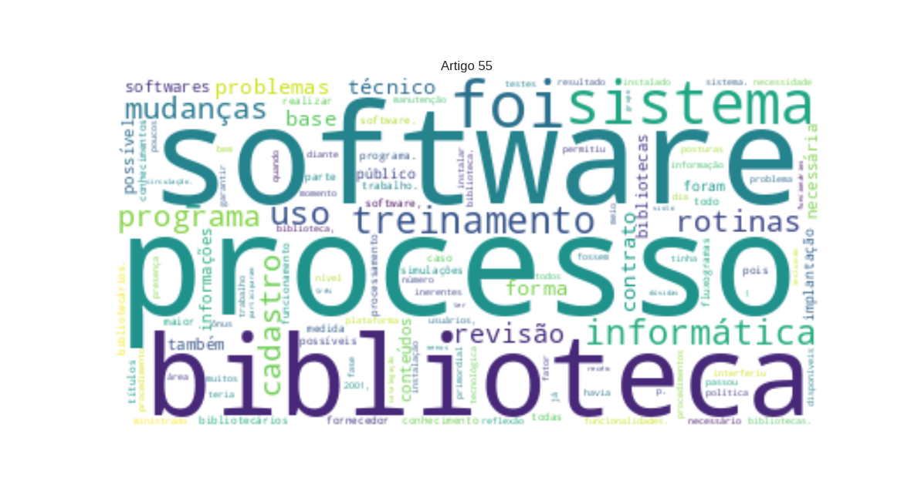

55 - SILVA, Gerlandy Leão da_Automação na biblioteca Tebyreçá de Oliveira do Instituto Federal do Maranhão_um processo de mudanças significativas.txt

Área: Acesso a informação
AUTOMAÇÃO
LOC
NA
BIBLIOTECA
ORG
TEBYREÇÁ DE OLIVEIRA DO
INSTITUTO FEDERAL
LOC
DO
MARANHÃO
MISC
: um processo de mudanças significativas
Gerlandy Leão da Silva∗
PER
Keyse Rodrigo Fonseca Silva∗ RESUMO
PER
Automação dos serviços da biblioteca do
Instituto Federal do Maranhão
LOC
.
Relato
PER
de experiência sobre a implantação de software de automação. Este processo envolveu revisão das rotinas e procedimentos em nível administrativo e técnico, bem como capacitação dos servidores. Soluções simples foram adotadas para problemas inerentes a administração pública. Palavras-chave: Automação de bibliotecas.
Instituto Federal do Maranhão
LOC
. 1 INTRODUÇÃO O
Instituto Federal de Educação, Ciência e Tecnologia do Maranhão
LOC
foi fundado em 1909 com o nome de
Escola Técnica
ORG
. Ao longo de 100 anos de existência já assumiu outras nomenclaturas, sendo a mais conhecida
Centro Federal de Educação Ciência e Tecnologia
LOC
(
CEFET
ORG
), e diferentes posturas diante da sociedade. Em agosto 2001, o então
CEFET
ORG
adquiriu o programa
SophiA
MISC
biblioteca, graças ao empenho de alguns servidores. O fator financeiro interferiu no processo de escolha do software e no grau de suas funcionalidades. Por exemplo, na época o software em questão não adotava o protocolo
Z39.50
LOC
e foi adquirida sua versão básica. Iniciaram-se as atividades apenas a nível interno, com o cadastro de obras. O público externo ainda não usufruía os benefícios da automação. O conhecimento limitado de informática interferiu na velocidade dos cadastros. Em 2006, o processo parecia que ia deslanchar quando houve um treinamento ministrado pela empresa desenvolvedora do software. Este treinamento foi realizado com compartilhamento de despesas com uma faculdade particular. Os servidores estavam empolgados e ansiosos para colocarem em prática todo o conhecimento que haviam aprendido. Mas, durante o treinamento ∗ Bibliotecários do
Instituto Federal do Maranhão
LOC
.
Brasil
LOC
. http://www.ifma.edu.br. �descobriu-se um erro de cadastro incorrigível que, como conseqüência, levou a apagar toda a base de dados. O trabalho de anos de serviço foi perdido em poucos minutos. Em 2007, um novo problema revelou uma falha grave em todo o processo: o
Instituto
ORG
não havia renovado o contrato de manutenção. Sem o setor de informática saber como instalar o programa, o processo de automação parou da mesma forma que começou: zerado. A
Biblioteca
ORG
passou então por alguns problemas internos e o processo que solicitava um contrato de manutenção ficou esquecido, até que em 2008 foi retomado. No ínterim, a automação da biblioteca era motivo de desdenha e vista por muitos usuários, professores, alunos ou servidores, como lenda urbana, em que se tratava apenas de uma promessa que não se cumpriria. 2
INSTALAÇÃO
ORG
,
TESTES
ORG
E
PLATAFORMA TECNOLÓGICA
MISC
O processo de análise de um software não acaba quando ele é selecionado e adquirido. Continuará por um bom tempo depois de iniciado a operacionalização, se é que algum dia acabará. Apesar de uma análise prévia ser “[...] importante, na medida em que garantirá agilidade e segurança na implementação das rotinas, bem como o assessoramento para a transmissão de conhecimentos indispensáveis ao perfeito uso do produto”. (
CÔRTE et al.
MISC
, 1999) Os arquivos do programa ficaram disponíveis em uma área de download no site do fornecedor. Isto permitiu que os procedimentos de instalação fossem iniciados imediatamente, enquanto o
CD-Rom
MISC
contendo o software, que havia sido enviado pelo correio, não chegava. O procedimento de instalação foi executado pelo fornecedor por meio de uma conexão remota, sem a necessidade de deslocamento de um técnico para o
Instituto
ORG
, fato este que geraria ônus adicional para a instituição. Os analistas do
Instituto
LOC
puderam acompanhar todo o procedimento de instalação. Uma vez instalado foram tomadas providências para garantir a integridade dos dados armazenados pelo programa. Foi realizada uma reunião que contou com a presença de membros da diretoria do
Instituto Federal
LOC
e com as chefias da biblioteca e do setor de informática com o objetivo de definir as �atribuições de cada departamento referente ao software e definir uma política de backup. A próxima fase tinha um duplo objetivo. O primeiro era realizar testes para garantir que o sistema esteja funcionando. Destaque-se que se referindo a softwares para bibliotecas não é um questão apenas de instalar e executar o programa. Afinal, caso o sistema não esteja funcionando, vamos testar o quê? Normalmente, os principais erros surgirão na operacionalização do sistema. O objetivo primordial era conhecer o programa e suas funcionalidades. Para isso foi necessário estudar o software e realizar o maior número de simulações possíveis – cadastro de obras e usuários, empréstimo e devolução, relatórios, etc. – depois apagar a base de dados e iniciar os cadastros definitivos.
Côrte et al.
MISC
(2002), comenta a interferência da plataforma tecnológica da instituição no processo de automação. Ela interfere na configuração do sistema ou vice-e-versa. À medida que o sistema vai sendo implementado novos ajustes serão realizadas. Foram necessárias configurações com privilégios de acesso específico para os servidores. Configurações nas máquinas locais foram realizadas, considerando-se, evidentemente, a política de uso dos equipamentos e de segurança de dados do
Instituto
ORG
. A presença de pessoal especializado nesta etapa foi imprescindível. Quando o sistema começou a oferecer ao público empréstimos automatizados novos ajustes precisaram ser feitos e, provavelmente outros ainda precisarão ser realizados. 3 ADEQUAÇÃO DAS
ROTINAS ADMINISTRATIVAS
MISC
Durante a execução da fase de simulações percebemos a veracidade do óbvio: quando adquirimos softwares prontos, não se adequa o software a biblioteca e sim a biblioteca ao software. Pois ele é “o resultado de uma reflexão sobre as velhas estruturas com vistas a formar uma nova organização” (
CAFÉ
ORG
;
SANTOS
ORG
;
MACEDO
MISC
, 2001, p. 70). A forma de organização dos serviços e das rotinas administrativas foi idealizada para funcionar com um sistema manual. Para atuarem com um sistema informatizado seria necessária uma revisão na organização das atividades desenvolvidas na biblioteca. �Procedeu-se, então, uma análise dos serviços e das rotinas da biblioteca e avaliou-se o impacto que o sistema de informação teria nelas. Criaram-se fluxogramas que foram discutidos, primeiramente, com os bibliotecários. Este momento foi oportuno para revisão de atividades e para escolha do que atenderia de forma eficaz e com mais eficiência as necessidades institucionais. Sucedendo estas primeiras discussões os fluxogramas foram apresentados para todos os servidores da biblioteca, que também tiveram a oportunidade de expressar-se. Após esta última revisão tivemos os fluxogramas definitivos. O resultado das análises foi uma reestruturação das rotinas administrativas. Percebemos que sobre um único setor convergiam atividades inerentes a administração, processamento técnico e a circulação. A sobrecarga era evidente e a qualidade dos serviços estava sendo comprometida. A solução foi desvincular estas atividades uma das outras e redistribuí-las entre os servidores. Para isso, foi necessário definir uma sala específica para administração, outra para processamento técnico e delegar todas as atividades de circulação para um setor específico. 4 CAPACITAÇÃO E
RESISTÊNCIAS
ORG
A equipe que se engajou na implantação do software era composta de bibliotecários e técnicos recém concursados que não participaram do treinamento ministrado pelo fornecedor em 2006. Visto que solicitar um novo treinamento era inviável devido ao ônus institucional significativo, grande parte da apreensão dos conteúdos se deu por autodidatismo. No entanto, o contrato de manutenção e suporte permitiu o uso do serviço de mensagens instantâneas para retirada de dúvidas e esclarecimentos em tempo real. Ademais, a capacitação intermediada pelo fornecedor do software, não seria suficiente para atender a amplitude da capacitação necessária. Talvez, naquele momento não seria tão proveitosa. A capacitação necessária para viabilizar a automação, porém, teria que abordar pelo menos três áreas: �a)
Administrativa
LOC
– assimilar as mudanças nos serviços e rotinas decorrentes da automação – compreensão e compreender novas posturas profissionais; b)
Acadêmica
LOC
dos fundamentos teóricos, da
Biblioteconomia
LOC
e
Informática
LOC
, por trás do funcionamento do software. c)
Operacional
LOC
– conhecimento de funcionamento do sistema; A capacitação administrativa envolveu a compreensão do novo fluxograma de atividades. Houve também uma redistribuição de atividades com o objetivo de evitar sobrecargas sobre uma pessoa ou grupo de pessoas. As mudanças administrativas envolveram também mudanças de atitudes nos servidores que foram incentivados a adotar uma atitude proativa e passaram a ter maior autonomia para tomada de decisões. Foi incentivado o uso das ferramentas administrativas disponíveis que até então estavam sendo negligenciadas, como foi o caso do regulamento da biblioteca. A capacitação acadêmica procedeu antes da capacitação operacional. Foram capacitados todos os servidores incluindo os bibliotecários. Através do curso de atualização no
Código de Catalogação Anglo-Americano
MISC
(
AACR2
MISC
) e Classificação
Decimal Universal
ORG
(
CDU
ORG
), a equipe de bibliotecários do
Instituto Federal do Maranhão
LOC
sentiu-se mais segura para realizar o trabalho, pois verificamos dúvidas por parte dos mesmos, fossem os próximos a se aposentar ou os recém egressos da universidade. A atualização quanto as mudanças sofridas nas normas foi necessária antes da implantação do software exatamente para corrigir erros e evitar o alimento da base com informações defasadas. Na capacitação acadêmica dos demais técnicos, abordou-se conteúdos que tratavam de organização de unidades de informação, catalogação e indexação. Todos os servidores, incluindo funcionários terceirizados e estagiários participaram deste treinamento. Os conteúdos referentes a área de informática foram passados gradativamente por meio da convivência, através de conversas com os colaboradores do setor de informática e com bibliotecários. Esta medida tornou possível trabalhar um outro problema inerente a automação: a resistência dos servidores. �Cerca da metade dos servidores da biblioteca estão prestes a se aposentar. Quando entraram no serviço público o uso do computador não era difundido. Nos anos 2000, mesmo quando o software já estava instalado na biblioteca criou-se um protecionismo desnecessário com relação ao uso do computador. Quando informados sobre a necessidade de todos manusearem o software, alguns chegaram a pensar em mudar de setor. Aos poucos foi trabalhado que a informática serviria de auxilio e que computador não era um inimigo, apenas mais uma ferramenta de trabalho. A capacitação operacional visou transmitir informações sobre o manuseio do programa. Isto envolveu apresentação de slides com explicações e demonstrações e, em uma segunda parte, simulações práticas. O treinamento operacional foi feito em dois momentos: (1) processamento técnico e (2) circulação. Além destes treinamentos os servidores foram acompanhados por um período de tempo. A navegação entre os módulos é complexa e o funcionamento do programa não é fácil de entender sem uma boa base em informática. Apesar destas medidas, muitos problemas ocorreram e a morosidade na execução das atividades tornou necessária a execução de um novo treinamento. Este último tinha objetivos diferentes. O objetivo principal deste treinamento era diminuir a morosidade com as quais as atividades estavam sendo executadas e a quantidade de ocorrência de erros. O conteúdo foi voltado para explicação detalhada de algumas funcionalidades do programa e trabalhado erro por erro, considerando suas possíveis causas e condutas a serem adotadas quando acontecessem. A partir do treinamento foi possível planejar e estipular metas para a conclusão do trabalho. Não foi possível parar o atendimento da biblioteca e se voltar apenas para automação. Dessa forma foi preciso dar continuidade aos trabalhos como: atendimento ao usuário e outros operacionais e administrativos, ao mesmo tempo em que fosse implantado o sistema. A biblioteca passou por alguns problemas como perda de funcionários por aposentadoria ou transferência para outro setor, além do término do contrato dos estagiários deixando um espaço de três meses sem um novo grupo o que dificultou o andamento do trabalho. �O planejamento prevê pelo menos um auxiliar por turno para cadastro de informações básicas contidas numa planilha preenchida pelo bibliotecário responsável pela classificação. Depois de cadastrados são catalogados por outro bibliotecário que corrige possíveis erros e acrescenta informações adicionais. Trabalhando no mínimo cinco títulos por auxiliar/turno têm-se os seguintes números: Títulos por turno 5
Tabela
MISC
1 – Número de títulos cadastrados
Títulos
MISC
por dia
Títulos
LOC
por semana Títulos por mês 15 75 300 O acervo é constituído por cerca de vinte mil exemplares, mas não se sabe o número exato de títulos. Se o acervo possuísse 20 mil títulos o trabalho seria concluído em pouco mais de seis meses. Assim, visto que a quantidade de títulos é menor que de exemplares, pretende-se concluir o cadastro de livros em cerca de quatro meses. 5 CONCLUSÃO A automação de bibliotecas é um processo contínuo. Mesmo que por algum se consiga ter todas as obras cadastradas, novas ainda serão adquiridas. Ademais, o ambiente interno e/ou externo irá mudar, como mudou no caso do agora
Instituto Federal
LOC
e novas exigências tecnológicas serão requeridas. O fator humano é o primordial para o sucesso de qualquer processo de automação, pois ainda não inventaram máquina para executar todas as atividades sozinhas. As experiências adquiridas nos levam a concluir que o principal investimento é capacitar os profissionais diante das inovações tecnológicas. Capacitação essa que não envolve somente conhecimentos tecnológicos, mas também administrativos e humanos. A maior reflexão desta experiência, porém, é: quais os limites de um processo de automação? A palavra automação no contexto da
Biblioteconomia
LOC
nos leva a fazer alusão a softwares e computadores. Para operacionalizar um sistema requer-se que se tomem medidas e que haja apreensão de conteúdos que vão além da informática e envolvem áreas como administração, administração pública e, evidentemente,
Biblioteconomia
LOC
. É possível desvincular �esses conhecimentos ou ações do processo de automação? Mesmo que seja possível, a linha limítrofe entre o que faz ou não parte do processo, em determinados momentos, é tênue e difícil de distinguir. REFERÊNCIAS
CAFÉ
ORG
,
Ligia
ORG
;
SANTOS
ORG
,
Christophe
MISC
dos;
MACEDO
MISC
,
Flávia
PER
. Proposta de um método para escolha de software de automação de bibliotecas. CI.
Inf
PER
. ,
Brasília
LOC
, v. 30, n. 2, p. 70-79, maio/ago. 2001.
CÔRTE
ORG
,
Adelaide Ramos e. Automação de bibliotecas
ORG
e centros de documentação: o processo de avaliação e seleção de softwares. Ci.
Inf
PER
.,
Brasilia v.28
PER
, n.3,
Set./Dez.1999
PER
. Disponível em:
http://www.scielo.br/scielo.php?script=sci_arttext&pid=S010019651999000300002 Acesso
MISC
em: 20 mar 2009. CÔRTE,
Adelaide Ramos
MISC
e, et al.. Avaliação de softwares para bibliotecas e arquivos: uma visão do cenário nacional. 2. ed.
Sao Paulo
LOC
:
Polis
LOC
, 2002
AUTOMATION IN
MISC
THE LIBRARY TEBYREÇÁ DE OLIVEIRA'S
OFFICE
MISC
OF FEDERAL MARANHÃO: a
process of significant changes
ORG
ABSTRACT Automation of the library services of the Federal Institute of Maranhão
MISC
. Report of experience on the deployment of software automation. This process involved reviewing
the routines and procedures in both
MISC
administrative and technical and training of servers.
Simple
ORG
solutions
have been adopted for problems of
MISC
public administration..
Key-words: Automation of libraries
MISC
.
Instituto Federal do Maranhão
LOC
. �